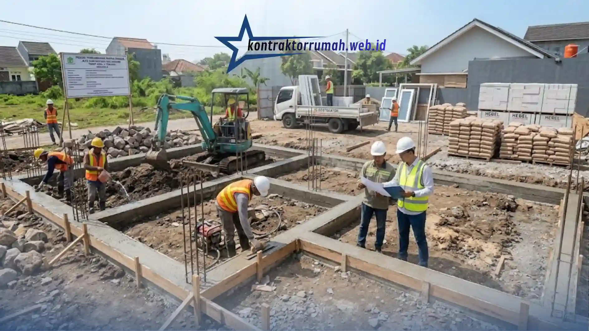

Membangun rumah impian dari nol atau melakukan perombakan besar bukanlah pekerjaan yang bisa dilakukan secara sembarangan. Dibutuhkan perencanaan matang, tenaga kerja terampil, serta pengawasan yang ketat. Di sinilah peran jasa kontraktor rumah menjadi sangat krusial. Menggunakan jasa profesional tidak hanya menghemat waktu, tetapi juga mencegah pembengkakan biaya (overbudget) akibat kesalahan konstruksi.
Poin Penting
- Jasa kontraktor rumah profesional memberikan RAB transparan & time schedule terstruktur.
- Tahap awal konstruksi mencakup pembersihan lahan, pengukuran & bouwplank, hingga galian pondasi.
- Memasuki hari ke-8, ritme kerja mulai stabil dengan pengecoran pondasi & sloof yang mulai dikerjakan.
- Sloof berperan meratakan beban dinding ke pondasi sebelum dinding mulai dipasang.
- Manajemen logistik yang rapi memastikan material tahap selanjutnya tiba tepat waktu tanpa menghambat pekerja.
Mengapa Membutuhkan Jasa Kontraktor Rumah?
Banyak orang mengira menggunakan tukang harian biasa lebih murah. Faktanya, tanpa manajemen proyek yang baik, waktu pengerjaan bisa molor dan material banyak terbuang. Jasa kontraktor rumah profesional memberikan Rencana Anggaran Biaya (RAB) yang transparan, jadwal pengerjaan terstruktur (time schedule), serta garansi pemeliharaan setelah proyek selesai.
Tahap Awal Konstruksi
Sebelum masuk ke fase pembangunan utama, jasa kontraktor rumah telah melakukan serangkaian persiapan krusial berikut.
Pembersihan Lahan (Clearing)
Pembersihan lahan membersihkan lokasi dari semak, sisa puing, atau struktur lama, sehingga area proyek siap diukur dan digali sesuai gambar kerja yang telah disepakati.
Pengukuran dan Bouwplank
Pengukuran dan bouwplank menentukan titik batas bangunan, elevasi lantai, dan siku bangunan agar presisi sesuai gambar kerja, sehingga meminimalkan risiko kesalahan struktur di tahap selanjutnya.
Galian Pondasi
Galian pondasi memulai penggalian tanah untuk pondasi batu kali atau cakar ayam (footplat) sesuai desain struktur yang telah disepakati antara kontraktor dan pemilik rumah.
Tahap galian pondasi menjadi fondasi presisi sebelum jasa kontraktor rumah melanjutkan ke pengecoran pondasi dan sloof.
Evaluasi Progres Hari ke-8
Memasuki hari ke-8, ritme kerja di lapangan biasanya sudah mulai stabil dan terukur. Jika menggunakan jasa kontraktor rumah yang andal, berikut progres yang akan terlihat di lapangan.
Pengecoran Pondasi dan Sloof
Pekerjaan galian umumnya sudah selesai dan tim mulai merakit besi tulangan. Pengecoran tapak (cakar ayam) dan perakitan sloof beton (balok pengikat pondasi) mulai dikerjakan. Sloof berperan penting untuk meratakan beban dinding ke pondasi.
Pengiriman Material Berkelanjutan
Kontraktor yang baik memiliki manajemen logistik yang rapi, material untuk tahap selanjutnya seperti bata merah/hebel, pasir pasang, dan semen sudah mulai tiba di lokasi tanpa menghambat ruang gerak pekerja.

Progres pengecoran sloof pada hari ke-8 menjadi penanda ritme kerja jasa kontraktor rumah yang mulai stabil di lapangan.
Catatan dari tim Kontraktor Rumah: Kontraktor Rumah beroperasi sebagai mitra konstruksi berbadan hukum PT resmi, siap membantu perencanaan pembangunan rumah tinggal mulai dari pembersihan lahan, pengukuran bouwplank, hingga pengecoran pondasi dan sloof dengan manajemen logistik yang rapi dan RAB transparan sejak awal proyek.
FAQ Seputar Jasa Kontraktor Rumah Tinggal
Memilih jasa kontraktor rumah yang tepat adalah investasi jangka panjang. Pastikan Anda memeriksa portofolio, rekam jejak, dan kejelasan kontrak kerja sebelum menyerahkan proyek hunian kepada mereka. Konsultasikan kebutuhan renovasi atau pembangunan rumah Anda dengan kontraktor terpercaya agar hasil akhir sesuai ekspektasi, tepat waktu, dan sesuai anggaran.